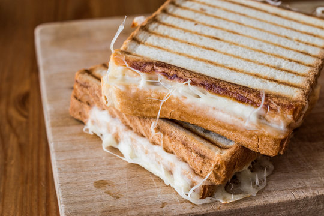

Tost

Tost, the delicious Turkish toast. With its cheese between fried bread slices, it is a meal beloved by many.
Ingredients
- 2 slices of bread
- Enough sliced cheese (preferably "tost peyniri") to fill between the bread slices
- You should have a two sided grill in order to prepare this meal
Steps
- Get your grill evenly hot
- Place two slices of bread inside and close the other side of your grill on top them
- Use some pressure (but not too much)to cook breads nice and evenly
- When slices are ready to take cheese, place them (this is when the slices are about to get fried)
- Close the other slice on top of cheese
- Close your grill again and cook it about 3-4 minutes
- Your cheese can leak from between slices, this is your sign when take it from the grill
- Bon appetit!
Back to main page